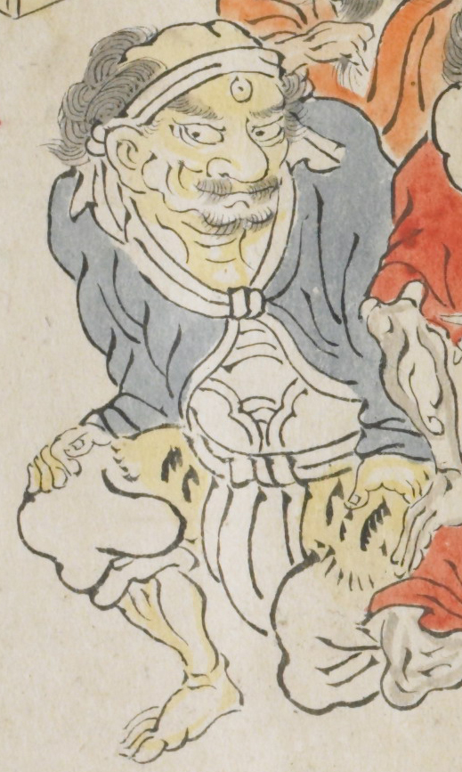

黄色い体をした三つ目の鬼。青い衣服を身にまとい、白い鎧のようなものを身につけている。虎皮の腰巻を巻き、白い鉢巻をつけている。
出典：親書誌：U426_nichibunken_0079：酒天童子絵巻；シュテンドウジエマキ／日付：2006／資源識別子：U426_nichibunken_0079_0003_0010
Copyright (c)2010- International Research Center for Japanese Studies, Kyoto, Japan. All rights reserved.